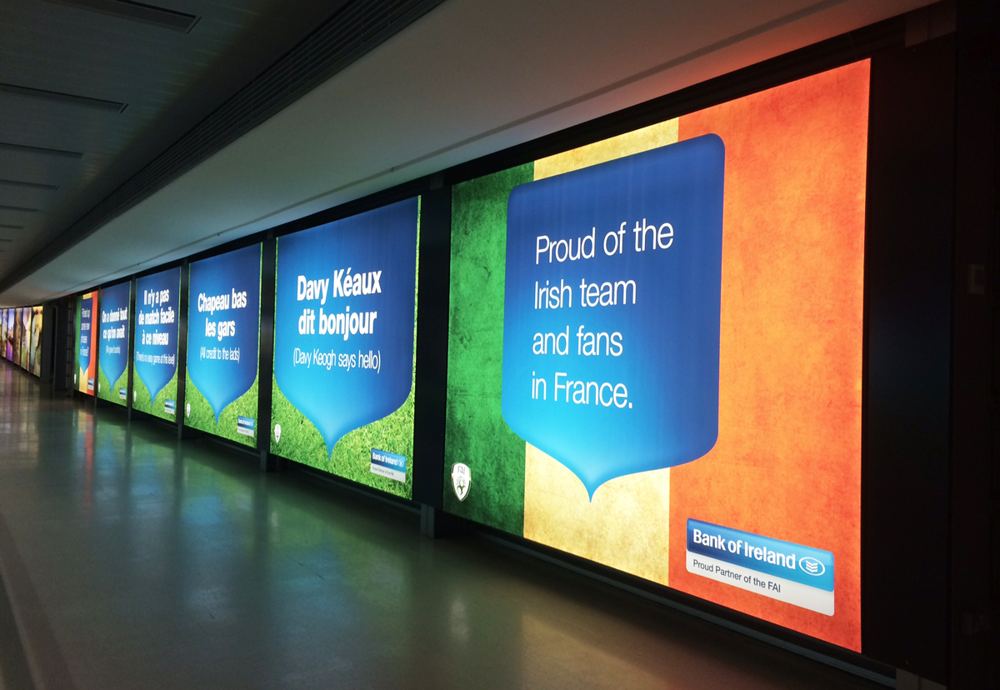
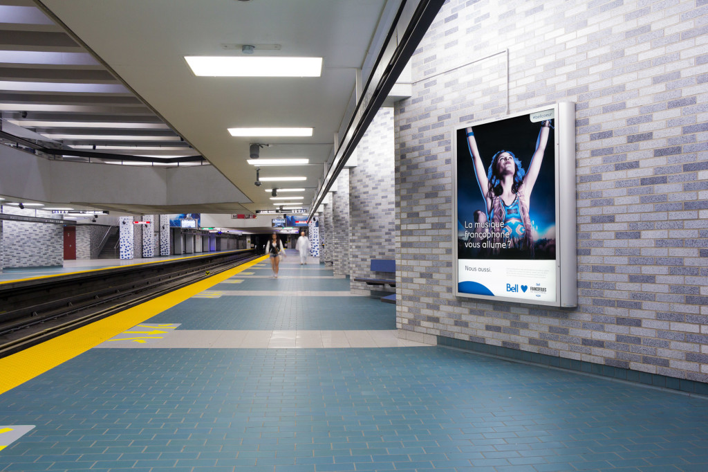
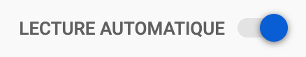
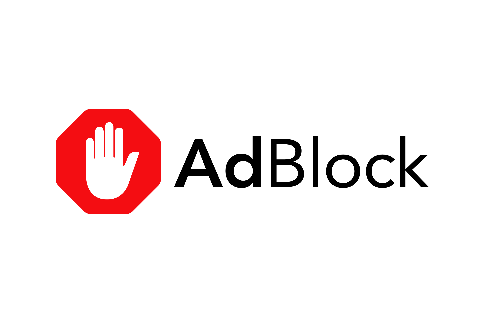
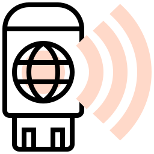

Une pollution pourtant insoupçonnée.
Les publicités sur les écrans publicitaires, un fléau
Nous avons vu que les écrans publicitaires étaient un gaspillage de ressources important, néanmoins, il
existe aujourd’hui des écrans publicitaires rétroéclairés, qui consomment très peu d’énergie par rapport aux
écrans publicitaires qui consomment 15 fois plus d’énergie.
Encore mieux, il faudrait privilégier les affiches.

Écrans publicitaires rétrocéclairés (Horizon Digital Print)
Le but ici n’est pas de supprimer radicalement tous les panneaux publicitaires, mais de trouver le juste
milieu afin qu’il y ait le moins d’écrans publicitaire allumés dans le vide possible.
Comme pour les écrans publicitaires situés dans la rue, le taux d’éclairage doit être affiché en fonction
de la lumière ambiante.

Écrans publicitaires rétrocéclairés (Horizon Digital Print)
Pour les écrans situés dans des endroits clos tels que les métros, nous pouvons mettre en place un détecteur
de mouvement qui n’allume l’écran que lorsque quelqu’un passe.
Par conséquent, nous devrions préférer les écrans rétroéclairé ou les formats d’affiche papier.
Les publicités sur nos appareils, une pollution astronomique.
Pour ce qui est des publicités qui apparaissent sur nos appareils, sur des pages web, dans nos mails etc…
Les annonceurs devraient diffuser des vidéos en format de basse qualité, car les annonces qui surgissent sur
une page web sont toujours plus petites par rapport au contenu que nous sommes en train de consulter ; des
vidéos en
480p seraient suffisantes.
Nous recommandons également de donner aux utilisateurs la possibilité de cliquer sur un bouton pour indiquer
s’ils souhaitent voir l’annonce.
Le fait de laisser des plateformes de vidéos comme YouTube, changer automatiquement de vidéo
lorsque la précédente se termine, implique de nouvelles pubs.

Aujourd’hui, YouTube a compris que
lorsque l’on laisse une vidéo en fond et qu’on laisse enchainer les vidéos automatiquement, on adopte un
comportement passif et donc, on laissera la publicité passer à chaque début de vidéo.
C’est pour cela que les annonces entre deux vidéos enchainées automatiquement, sont plus longues. Pour
contrer ça il vous faut tout simplement désactiver le lancement automatique de ses vidéos.

C’est pour cela que nous vous invitons également à utiliser des extensions qui bloquent les
publicités sur vos pages web.
Il existe des centaines de systèmes qui peuvent vous aider à éliminer ces publicités néfastes pour la
planète, et nous vous conseillons AdBlock, qui est une extension Chrome et qui s’installe
en deux clics.

Après avoir chargé la page Web, nous pouvons éteindre complètement le WIFI et visionner notre contenu, il ne
disparaîtra pas ! De ce fait vous ne verrez plus de pubs surgir pendant la période de consultation du site.
Les mails intrusifs.
Supprimez les mails à but promotionnels et se désinscrivez-vous des
newsletters.
Nettoyez souvent vos e-mails et priorisez les e-mails contenant des pièces jointes. Nous vous proposons
d’essayer Cleanfox qui est un outil qui peut vous aider à trier et vous permettre de vous
désinscrire des newsletters qui ne vous intéressent plus.
Cependant, l’astuce la plus judicieuse serait pour les annonceurs de mettre moins de pubs, mais de les mettre
à des endroits ou le trafic est plus important, à des endroits stratégiques.
À PROPOS
Vous souhaitez en savoir plus et me contacter?
Visionnez les autres projets !